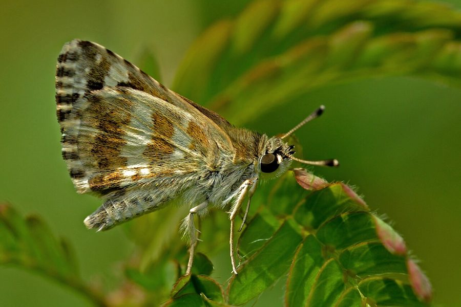

भारतीय ग्रिज़ल्ड स्किपरIndian Grizzled Skipper
Spialia galba · Hesperiidae · INS-0261

- Scientific name वैज्ञानिक नाम
- Spialia galba (Fabricius, 1793)
- Family कुल
- Hesperiidae
- Hindi हिंदी
- भारतीय ग्रिज़ल्ड स्किपर
- Local names स्थानीय नाम
- grizzled skipper, chithra skipper titli, indian grizzled skipper
- Status here यहाँ की स्थिति
- native
- Movement आवागमन
- Resident, here all year
- Known from कहाँ दर्ज
- Others have published records from the wider Awadh–Purvanchal plain, none yet from Basti–Ayodhya अवध–पूर्वांचल से दूसरों के प्रकाशित अभिलेख, बस्ती–अयोध्या से अभी नहीं
- IUCN IUCN
- not evaluated
- Review समीक्षा
- not yet reviewed
When to look कब देखें
Present all year. साल भर मौजूद।
Uses and possibilities उपयोग और संभावनाएँ
Drawn from the documented uses in the profile below, where each is labelled traditional, current or a research lead. All uses →
भारतीय ग्रिज़ल्ड स्किपर / Indian Grizzled Skipper
Spialia galba (Fabricius, 1793) — Hesperiidae
भारतीय ग्रिज़ल्ड स्किपर — अवध के खेतों की मेड़ों, रास्तों और खुली धूप वाली परती भूमि पर जमीन से सटकर तेज उड़ान भरने वाली छोटी स्किपर तितली, जिसके पंखों पर सफेद चौकोर धब्बे और चितकबरी झालर होती है।
Quick Identification त्वरित पहचान
| Feature | Description |
|---|---|
| Wingspan | Small among Indian skipper butterflies |
| Upperside colour | Dark brownish-black with profuse white spotting |
| Wing fringes | Prominently chequered with black and white segments |
| Underside colour | Pale olive-grey to ochraceous with broad white bands |
| Antennae | Widely separated at base, hooked at the tip |
| Basking posture | Wings held completely flat against the ground |
| Resting substrate | Bare sun-baked soil, gravel paths, and low stones |
Field tip: Look along sunlit field bunds and dry pathways. A small dark skipper flying in low, rapid buzzing darts and basking flat on bare ground with chequered wing margins and neat white spots is this species.
हिंदी — कैसे पहचानें: पगडंडियों और मेड़ों पर जमीन से सटकर उड़ने वाली छोटी तितली। पंखों पर चौकोर सफेद धब्बे और किनारों पर काली-सफेद कटीली झालर होती है, और यह धूप में पंख पूरी तरह फैलाकर बैठती है।
Morphology आकारिकी
The patterning of Spialia galba is crisp, geometric, and immediately identifiable. The upperside ground colour is rich dark fuscous brown or blackish, profusely adorned with sharply defined quadrate white spots. On the forewing, these include discal spots, a pair in the cell, and an oblique subapical series. The hindwing carries a prominent median white band and a submarginal row of small dots.
The wing margins feature an unmistakable chequered fringe composed of alternating blocks of snow-white and deep black hair-scales. On the underside, the ground colour softens into a pale olive-ochraceous or greyish brown, against which the white spots broaden and partially merge into continuous bands. The antennae have wide, curved apiculus hooks characteristic of the Pyrginae.
The head is broad with dark eyes and grey hairs; the palpi are ascending and clothed in mixed dark and pale setae. The legs have distinct tibial spurs that assist the insect in perching securely on gravel or hard-packed clay soils.
हिंदी: इसके पंख गहरे भूरे-काले होते हैं जिन पर साफ चौकोर सफेद धब्बे सजे होते हैं। पंखों के बाहरी किनारों पर सफेद और काले रंग की सुंदर झालर होती है। नीचे से पंखों का रंग हल्का जैतूनी-भूरा होता है।
Behaviour & Ecology व्यवहार और पारिस्थितिकी
Spialia galba is a common and conspicuous inhabitant of open, sunny wastelands and agricultural edges. It has an exceedingly fast, buzzing, low-to-the-ground flight, often covering short distances before abruptly settling on bare sun-baked soil, gravel paths, or flat stones.
When resting or basking, it spreads both pairs of wings completely flat against the substrate to absorb radiant solar heat. Males establish small perching territories on low stones or weed tips, fiercely pursuing any passing insects before returning to their post. They are active from early morning until sunset.
Unlike grass skippers that hold their forewings semi-erect, this species always rests flat-winged. During windy conditions, it perches close to the lee of low stones or weed mounds to prevent being buffeted by gusts.
Adults visit flowers with rapid, frantic movements, probing for nectar while vibrating their wings rapidly before darting off to the next blossom.
हिंदी: यह तितली जमीन के बिल्कुल पास भनभनाते हुए बहुत तेज उड़ती है। धूप सेंकने के लिए यह नंगे पत्थरों या सूखी मिट्टी पर पंख चपटे फैलाकर बैठती है। नर अपने इलाके में आने वाले दूसरे कीड़ों को तुरंत खदेड़ देता है।
Life Cycle / Phenology जीवन चक्र
Females deposit pale, domed, ribbed eggs singly on the leaves of host plants in the mallow family. The larva is cylindrical, pale green or brownish with a dark head capsule and fine downy hairs.
The caterpillar builds a protective tubular shelter by rolling a leaf or drawing several leaves together with strong silken threads. It emerges primarily at night or during overcast weather to feed on adjacent leaf margins.
Pupation takes place inside the silken leaf shelter, with the pupa covered in a whitish waxy bloom that repels moisture. Multiple successive generations occur throughout the year without a prolonged diapause.
Larval development proceeds swiftly during the monsoon, taking as little as three weeks from hatching to pupation in hot, humid weather.
हिंदी: मादा तितली खरपतवारों की पत्तियों पर अकेले अंडे देती है। इसकी इल्ली पत्तों को रेशमी धागों से मोड़कर एक नलीनुमा घर बनाती है और रात में बाहर निकलकर खाती है। प्यूपा भी इसी मुड़े हुए पत्ते के अंदर बनता है।
Host Plants or Prey आहार
De Jong (1978), as listed by Funet, gives the larval food plants as Arrowleaf Sida (Sida rhombifolia), Hibiscus and Waltheria indica, all of the mallow family in its present sense.
The larvae feed on tender and mature foliage from the safety of their folded leaf shelters.
Adults are diligent flower visitors, feeding on nectar from low herbs such as Tridax Daisy (Tridax procumbens), Cyanthillium cinereum, Evolvulus alsinoides, and roadside brassicaceous weeds, acting as active pollinators.
हिंदी: इसकी इल्लियां अतीबला (सिडा), गुड़हल की जाति के पौधों और वाल्थेरिया के पत्ते खाती दर्ज हैं। वयस्क तितलियां छोटे जंगली फूलों का रस पीती हैं और परागण करती हैं।
Predators / Natural Enemies शत्रु
Larvae in leaf rolls are hunted by solitary hunting wasps (Eumeninae) and parasitized by braconid wasps.
Adults basking on the ground are ambushed by robber flies (Asilidae), wolf spiders (Lycosidae), and ground beetles. Ground-foraging birds take them opportunistically when they settle on open paths.
Praying mantises hiding among roadside herbs capture foraging adults as they probe low flowerheads.
हिंदी: पत्तों के घरों में छिपी इल्लियों को शिकारी ततैये ढूंढ लेते हैं। जमीन पर बैठी तितलियों को भेड़िए जैसी दौड़ने वाली मकड़ियां, शिकारी मक्खियां और जमीन पर चुगने वाली चिड़ियां पकड़ लेती हैं।
Agricultural / Human Relevance कृषि प्रासंगिकता
The Indian Grizzled Skipper is entirely beneficial. By pollinating wild herbs, leguminous weeds, and garden flowers, and by feeding harmlessly on roadside mallows, it forms an integral part of the rural ecosystem with zero pest potential.
Its preference for roadside ruderal weeds means that it flourishes in human-altered landscapes without conflict.
It provides an abundant food source for insectivorous birds in agricultural village surroundings.
हिंदी: यह फसलों को बिल्कुल नुकसान नहीं पहुंचाती क्योंकि यह केवल बेकार खरपतवारों पर पलती है। यह जंगली फूलों और फसलों में परागण करने में मदद करती है और पर्यावरण के लिए बहुत उपयोगी है।
Expected Locally स्थानीय रूप से अपेक्षित
Not a field record. Written from published accounts for eastern Uttar Pradesh. No confirmed local sighting yet — if you have seen it, that is what the atlas needs.
अभी तक स्थानीय पुष्टि नहीं। यह विवरण प्रकाशित स्रोतों से है, किसी अवलोकन से नहीं।
GBIF holds published records from the wider Awadh–Purvanchal plain, none yet from Basti–Ayodhya. In eastern Uttar Pradesh, Spialia galba is expected on sunny field bunds, pathways, fallow plots, and roadsides where wild mallows flourish. A confirmed first record requires a clear photograph with place and date submitted through the project portal.
हिंदी: अवध के हर जिले में खेतों की मेड़ों, रास्तों और धूप वाली खाली जमीनों पर इसके मिलने की पूरी संभावना है। स्थानीय पुष्टि के लिए इसकी साफ तस्वीर भेजें।
Distribution वितरण
Global range: Extremely widespread across the entire Indian subcontinent, from the plains to the sub-Himalayan valleys, through Pakistan, Nepal, Bangladesh, Sri Lanka, and eastward to Myanmar.
In India: Common across all bio-geographic zones, thriving in open dry country and agricultural plains (Varshney & Smetacek 2015).
In Uttar Pradesh: Recorded across cultivated fields, scrublands, and rural roadsides in every surveyed district.
In Basti district / eastern UP: Expected on sunny field margins, grazing lands, and river embankments.
हिंदी: यह पूरे भारत, नेपाल, पाकिस्तान और श्रीलंका में बहुतायत से मिलती है। उत्तर प्रदेश के सभी मैदानी और ग्रामीण इलाकों में यह आम है।
Research Questions शोध प्रश्न
- How does Spialia galba maintain year-round activity across the extreme cold waves and summer heat of Awadh?
- Does this skipper exhibit host plant preferences among different sympatric Sida species in rural fallows?
- What role does radiant heat absorption from bare soil play in morning flight initiation in winter?
- How does roadside weed clearance impact local skipper population densities along rural highways?
- क्या यह तितली अवध के खेतों की मेड़ों पर साल भर देखी जा सकती है?
- क्या इसके कैटरपिलर खुरंटी और कंघी जैसी खरपतवारों की पत्तियों को लपेटकर घर बनाते हैं?
Similar Species मिलती-जुलती प्रजातियाँ
| Species | How to tell apart | हिंदी |
|---|---|---|
| Taractrocera maevius | Possesses tawny or greyish-white spots and rests with forewings held semi-erect, lacking the bold chequered fringes of Spialia | धब्बे बादामी अथवा धूसर होते हैं और बैठने पर आगे के पंख आधे खड़े रहते हैं |
| Aeromachus stigmata | Much darker with minute white spots and without the prominent chequered wing margins | काफी गहरा रंग, अत्यंत सूक्ष्म सफेद बिंदु और चितकबरी झालर का अभाव |
| Gomalia elma | Underside pale green or marbly ochre with diffuse white spots, lacking geometric quadrate spotting | निचला भाग हल्का हरा या बादामी जिस पर चौकोर धब्बों का अभाव होता है |
Field rule: Easily identified by its low buzzing flight, neat quadrate white spots, chequered fringes, and flat-winged basking posture on bare soil.
हिंदी: जमीन पर पंख पूरी तरह फैलाकर बैठना, काले-सफेद चौकोर धब्बे और किनारों पर चितकबरी झालर इस छोटी तितली की खास पहचान हैं।
Taxonomy & Classification वर्गीकरण
Original description. Spialia galba was described as Hesperia galba by Johan Christian Fabricius in 1793 (Entomologia Systematica Emendata et Aucta, vol. 3(1), p. 352). It was later transferred to Spialia Swinhoe.
Subspecies. Nominate subspecies Spialia galba galba is widespread across the plains of India.
Family and order placement. Classified in the skipper family Hesperiidae, subfamily Pyrginae (spread-winged skippers), tribe Pyrgini. Characterized by resting with wings spread flat and chequered wing fringes.
IUCN status rationale. Not evaluated globally by the IUCN Red List. It is extremely common and adaptable across agricultural habitats.
हिंदी: इसका वैज्ञानिक विवरण 1793 में फैब्रिकियस ने दिया था। यह हेस्पेरिइडे (स्किपर) कुल की तितली है और इसे प्रकृति में कोई खतरा नहीं है।
Photo Gallery फोटो गैलरी
No photos yet — add field photos to media/species/indian_grizzled_skipper/ and run node scripts/sync_photos.js.
Photos needed आवश्यक फोटो
- [ ] Basking adult showing flat wing posture on bare earth (जमीन पर पंख फैलाए तितली)
- [ ] Underside pattern showing pale olive wash and white bands (पंखों के नीचे की बनावट)
- [ ] Larval shelter rolled with silk on Sida leaf (खुरंटी के पत्ते पर इल्ली का घर)
References संदर्भ
- Fabricius, J. C. (1793). Entomologia Systematica Emendata et Aucta, vol. 3(1). Hafniae.
- Evans, W. H. (1932). The Identification of Indian Butterflies, 2nd ed. Bombay Natural History Society, Bombay.
- Wynter-Blyth, M. A. (1957). Butterflies of the Indian Region. Bombay Natural History Society, Bombay.
- Kehimkar, I. (2008). The Book of Indian Butterflies. Bombay Natural History Society, Oxford University Press, Mumbai.
- Varshney, R. K. & Smetacek, P. (2015). A Synoptic Catalogue of the Butterflies of India. Butterfly Research Centre, Bhimtal.
- de Jong, R. (1978). Monograph of the genus Spialia Swinhoe (Lepidoptera, Hesperiidae). Tijdschrift voor Entomologie, 121: 23–146.
- GBIF Occurrence Data — Spialia galba, India (2025).
Source file: species/fauna/insects/indian_grizzled_skipper.md